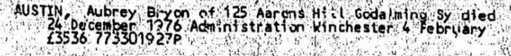
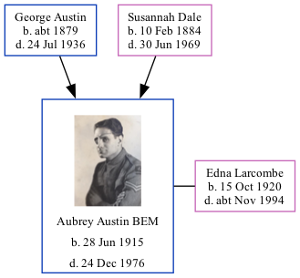

Aubrey Bryon Austin BEM 1915 - 1976
[ Home ] | [ Calendar ] | [ Surnames Index ] | [ Family History ]A truck driver and the 4th of 5 children of George Austin (a baker's assistant) and Susannah Dale, Aubrey Austin, the third cousin once-removed on the father's side of Nigel Horne, was born in Hambledon, Surrey, England on Jun 28, 19151,2 and baptized in Chilworth, Surrey, England on Jul 25, 1915. He married Edna Larcombe in Surrey, England around Nov 19404.
Throughout his life, he lived at 97 Walnut Tree Close, Guildford, Surrey in 1937 and on Sep 29, 19391; and at 125 Aarons Hill, Godalming, Surrey in 1976.
He died on Dec 24, 1976 in Godalming, Surrey3.
Parents
- George Frederick was born c. 1879
- Susannah Elizabeth was born on Feb 10, 1884
Citations
- 1939 Register - Findmypast (was the son of the head of the household)
- England & Wales births 1837-2006 - Findmypast
- England & Wales Government Probate Death Index 1858-2019 - Findmypast
- England & Wales Marriages 1837-2005 - Findmypast
Notes
Awarded the BEM in 1946 en.wikipedia.org).
Media
Aubrey Byron Austin
Aubrey Byron Austin - Probate

Electoral Register - 1937

England & Wales births 1837-2006 - BMD/B/1915/3/AZ/000040/052
England & Wales marriages 1837-2005 - BMD/M/1940/4/AZ/000046/109
England & Wales Government Probate Death Index 1858-2019 - GBOR/GOVPROBATE/C/1977-1977/00006852
1939 Register - TNA-R39-1900-1900J-011-14
Family Tree
Generated by Ged2Site. Last updated on Jul 20, 2025